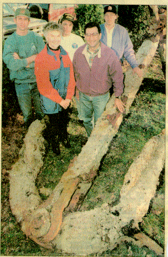

The freighter was bound from India to Boston with a cargo of exotic animals when it was engulfed by dense fog and struck an uncharted pinnacle of rock on April 22, 1938. One large decomposed python eventually washed ashore and was mistaken for a sea serpent by local residents.
Paul Bilodeau photo
Wreck divers display a 3-ton anchor they salvaged from an old shipwreck off the shore of Boston Saturday. They are, in front, Nina Vickers, owner of the Hawthorne Cove Marina in Salem, and diver Mehmet Mandalinci; in rear, Jeff Hannigan, captain of the boat that towed the anchor in, and divers Michael Miller and Stephen Galperin.
DANVERS - Fifty-seven years to the day after the freighter City of
Salisbury sank off the Nahant coast, Danversport-based wreck divers spent
a harrowing Saturday to retrieve a 6,000-pound piece of history.
Now
the British ship's bamacle encrusted 13-foot anchor sits behind Northeast
Scuba on Liberty Street.
But it didn't come easy - the salvage
effort required the cooperation of a variety of area businesses and was
painstakingly slow.
"It's not the prettiest thing to come out
of the New England waters in recent years, but it's one of the largest.
It's huge," said diver Michael Miller of Danvers. "For four guys
diving over the weekend, it was a good haul."
Known now as the
"Zoo Wreck," the nearly 6,000-ton vessel was bound from India to
Boston with an exotic cargo of birds, monkeys, pythons, cobras and other
animals.
The freighter was within sight of Boston Harbor when it was
engulfed by dense fog and struck an uncharted pinnacle of rock on Graves
Ledge on April 22,1938. Efforts to save the 419-foot freighter failed but
the entire 56-member crew and most of the cargo was rescued. One large
decomposed python eventually washed ashore and was mistaken for a sea
serpent by local residents.
Two weeks ago, Jeff Hannigan of
Tewksbury had been diving on the wreck of the City of Salisbury and told
Miller and fellow divers Stephen Galperin of Manchester, N.H., and Mehmet
Mandalinci of Methuen that he saw the anchor.
The divers went and surveyed the site, estimating the anchor's
weight at nearly 6,000 pounds. They planned to salvage it last Friday
using five 1,000-pound inflatable lift bags, Miller said.
"It
was barely buoyant enough to get it to the surface," he said. Just as
the group was ready to tow the anchor, it brushed the side of their boat,
the D/V Depth Charge, burst one of the bags and sunk again.
The
divers had originally found the anchor at a depth of 57 feet, but were
fortunate that when it sank again, it landed on a ledge 35 feet
underwater, said Miller. If it had gone down 65 to 70 feet, they wouldn't
have had enough power at their disposal to retrieve it.
Faith
Ortins, co-owner of Northeast Scuba, then went to Rhode Island to get a
2,000-pound lift bag to assist in the salvage. The divers returned
Saturday and this time were able to lift and tow the anchor from Graves
Light to Hawthorne Cove Marina in Salem Harbor.
"A major
concern was that it would sink on the way back," said Mandalinci, who
noted that there were depths of up to 100 feet along the way.
As a
result, it took eight hours to tow the anchor at a speed of about 2 knots.
"The anchor was so heavy if it sank, it would have taken the
boat down with it," said Galperin. "We stood by with a knife to
cut the float."
Mandalinci said things also got tricky when
they reached Salem Harbor.
"Our most critical point was at the end because we had a whole
group of moorings" to dodge in the harbor, he said. "If it
wasn't for the skillful maneuvering of our captain, Jeff, we would have
lost it. it was very nerve-wracking. You could walk faster than the boat
was going."
Once safely in the harbor, Hawthorne Cove Marina used its 35-ton
travel lift to hoist the anchor onto a flatbed truck, said marina owner
Nina Vickers. That was also a precarious job, because the winds and the
anchor's fragile condition made things difficult, she said. Riverview
Landscaping of Middleton then brought the anchor to Northeast Scuba
yesterday morning and set it down behind the business using a backhoe,
said Miller.
The anchor will be left alone for a week to dry off and
then will be cleaned of loose rust and polished for display, he said.
"It's our lawn ornament, " Miller said, adding that the
public is invited to come look at it. "We don't think it was the
actual main anchor of the wreck," but probably a spare.
The
divers said they were unaware of the anniversary until they had already
begun towing the anchor.
"It was fate," said Mandalinci.
"It was 57 years to the day and we didn't even realize it until we
looked at a book."